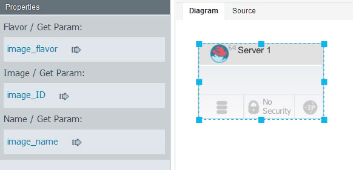

Editing configuration files
Configuration files are lists of properties and values. You can use configuration files to provision the same blueprint on multiple cloud systems.
Before you begin
About this task
In most cases, you create a blueprint with a default set of properties. Then, you use one or more configuration files to customize provisioning for specific clouds or specific situations. Since blueprints use only the properties in the configuration file that apply to it, you can also use a configuration file with more than one blueprint.
Configuration files are not necessary if you are deploying to OpenStack and OpenStack-based clouds. If you are deploying to any other supported cloud, you must use a configuration file.The editor for configuration files is similar to the editor for blueprint source code. You can specify properties in a configuration file and substitute those properties when you provision the environment.
Procedure
Follow these steps to create a configuration file:
Results
Example
For example, suppose that your cloud systems provide different virtual images. Start by creating
virtual images from one of the clouds in a blueprint, or use referenced images to represent generic
images. Then, externalize each of the properties in the virtual images. In the following figure, the
flavor, image ID, and name of the virtual image are bound to properties that are named
The code for the blueprint shows the property names rather than literal values, as in the following example code:
image_flavor, image_ID, and image_name.
The code for the blueprint shows the property names rather than literal values, as in the following example code:
virtual-image:
type: OS::Nova::Server
properties:
flavor: { get_param: image_flavor }
image: { get_param: image_ID }
name: { get_param: image_name }Then, create a different configuration file for each cloud, import these properties, and specify
values for a specific cloud system, as in the following example of a configuration
file.
parameters:
image_name: virtual-image
image_ID: aea5549c-892f-4c67-a3c9-9f494f1c7ead
image_flavor: m1.small